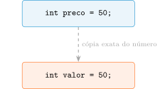
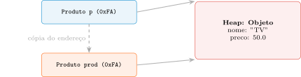

Aula 1 — Programação Orientada a Objetos
2026-08-30
A pergunta desta aula inteira: como escrever software que sobrevive à mudança?
Design não é sobre como o software funciona. É sobre como ele muda.
TRUE (Sandi Metz):
Roteiro: paradigma → encapsulamento → JVM → memória e parâmetros.
Procedural
Orientado a Objetos
Procedural: preco é um número passivo; uma função externa lê, calcula, sobrescreve. Qualquer código pode alterar preco sem checar regra nenhuma.
OO: você não calcula o desconto — você diz ao Produto: “aplique 10% de desconto em si mesmo”. O objeto pode recusar.
Volante e pedais (interface) vs. motor (implementação) — trocar o motor não muda como se dirige.
Information Hiding não é segurança contra hackers — é engenharia contra a fragilidade do próprio código.
Por que “ocultar informação” é uma estratégia de engenharia, e não uma questão de segurança contra invasores?
Escreva sua resposta com suas próprias palavras e compare com um colega antes de avançar (2 min).
Dica
Julgue V ou F — a questão só conta se acertar os 4 itens:
Dica
Classe
Objeto
Detalhe que confunde: a classe também vive na memória — no Metaspace, carregada pelo ClassLoader. 500 clientes no banco → 500 instâncias na Heap, todas rodando o mesmo bytecode carregado uma única vez.
javac: .java → Bytecode (.class), independente de plataforma.class, qualquer JVM compatível“Bytecode interpretado” ≠ “lento” — a JVM faz profiling em tempo real.
Identifica hotspots → compila só eles para código nativo, otimizado para a CPU atual e o uso real dos dados.
Vantagem sobre compilação estática (AOT): informação que só existe em tempo de execução.
Fim de escopo mata o ponteiro (Stack), não o objeto (Heap).
O GC rastreia o que está vivo, não o que é lixo.
Parte das GC Roots (variáveis locais ativas, atributos static) e navega pelos ponteiros. Inalcançável a partir de toda raiz \(\Rightarrow\) elegível para coleta.
Java não tem memory leak clássico — tem objetos que a lógica já descartou, mas a JVM ainda alcança.
Arquivos, sockets, conexões de BD: liberação determinística, via try-with-resources — não dá para esperar o GC.
Um mapa static nunca fica vazio sozinho, mesmo que os objetos que ele guarda não sirvam mais para nada. Por que o Garbage Collector se recusa a limpá-lo?
Escreva sua resposta e compare com um colega antes de avançar (2 min).
Dica
Julgue V ou F — a questão só conta se acertar os 4 itens:
static pode reter objetos indefinidamente, mesmo que a lógica de negócio já não precise mais deles.Dica
try-with-resources (fechamento determinístico).ProdutoProduto: Nome e ContratoProduto: Estado e ConstrutorProduto: Acessores e Interface PúblicaProduto: Ocultando a ImplementaçãoRegra muda? Só o método private muda. A interface pública — e todo código que já depende dela — permanece intacta.
thispublic e private: os Guardiões da Fronteiraprivate fora da classe não é aviso — é erro de compilação.
Compilador prioriza o escopo mais interno (o parâmetro). O atributo continua null.
thisthis não só desambigua nomes — garante que p1.metodo() altera p1, não p2, mesmo rodando o mesmo bytecode.

Duas cópias isoladas. Alterar valor não afeta preco.

Cópia do endereço, não do objeto. Os dois “controles remotos” abrem a mesma “porta” na Heap.
Passagem por valor da referência — nunca passagem por referência de verdade.
Se Java sempre passa por valor, como alterar prod.setPreco(999.0) dentro do método afeta o objeto original visto por quem chamou?
Escreva sua resposta e compare com um colega antes de avançar (2 min).
Dica
Julgue V ou F — a questão só conta se acertar os 4 itens:
&.prod.setPreco(999.0)) é visto por quem chamou o método.prod = new Produto(...)) dentro do método altera a variável original de quem chamou.Dica
Próxima aula: o construtor como guardião de integridade — Fail-Fast e invariantes de estado.
UNICAMP — Instituto de Computação